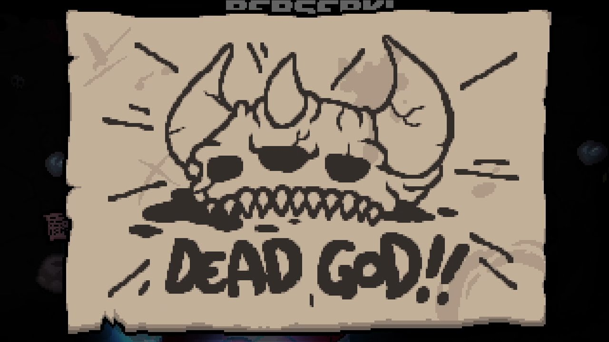

1. The binding of Isaac es god pruebenlo
The Binding of Isaac es un videojuego roguelike en el que puedes desperdiciar horas y horas y no te aburrirás!
:D
Este jueguito provocará que odies a las arañas en vez de temerles, pero, como todo lo malo tiene algo bueno, ello es Mamá Mega. Este es un objeto activo bien god que te permite fulminar todo a tu alrededor; destruye rocas, bandejas de cerámica, puertas de habitaciones (también otro tipo de puertas) y demás. Lo que no puede destruir son las cajas con pinchos, y los pilares, y otras cosas que no me acuerdo, si me acuerdo, ya no saldría este mensaje.
TBOI tiene tantos logros como las horas que he desperdiciado jugándolo. Es así que llevo alrededor de 2 años juegandolo, y entre tanto y tanto, no he podido completarlo. El último logro es el DEAD GOD, te lo dan cuando has obtenido todos los logros así bien god (el verdadero logro es vivir feliz). Aquí hay una lista, compartida por los de steamcommunity, de lo que debes hacer para obtener el DEAD GOD.

- Conseguir todos los objetos
- Mejorar al maximo la tienda donando monedas
- Desbloquear todos los personajes
- Matar a todos los enemigos
- Completar todas las marcas
- Llorar
- Cerrar el juego
- Desinstalar el juego
- Salir de tu casa
- Vivir
2. ¿Por qué NO deberíamos tener enemigos?
La razón principal es porque merecemos paz, sin la paz, las desigualdades y los criterios inconcordantes crearían un mundo de caos. Por ello tenemos conciencia y podemos hablar. La mentalidad del ser humano, hoy en día está en éxtasis debido a la dependencia hacia la vida ajena. No deberíamos ser dependientes, porque los problemas de la vida no dependen de otros, sino de cada uno de nosotros. Pero, el dar y no recibir es válido, además de bonito. Si quienes tienen grandes corazones, capaces de ser considerados parte de una familia, están presentes en tu día a día, no dependas de ellos, mas bien, creen un Dar y no recibir mutuos, que es completamente diferente. Los enemigos, en general, fueron personas buenas, solo que no hubo tal con corazón bondadoso que pudiera ser considerado una familia.
El que no tiene enemigos, ayuda a las personas, sin depender de alguien en común que lo anime o incite. Siempre y cuando tenga plena voluntad propia, ya que hay quienes ayudan solo por riqueza o garantías. Quienes esperan algo deben ganárselo, por más conflicto que exista en su dignidad. No se si habrá sentido en lo que digo pero, las intenciones valen mucho, así como lo es el mensaje que quiero transmitir. No tienen enemigos, nadie tiene enemigos. Nadie en este mundo merece ser herido.
3. La geometría en el Rocket League
Hay geometría en el rocket league cuando tienes que calcular el rebote entre el balón y las paredes, incluso es posible ocasionar un gol gracias al espacio y la geometría. Con suerte el balón llegará al arco del equipo enemigo.